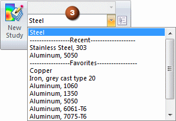

Favorites and Recent Materials tab
You manage the favorite and recently used materials by clicking the Favorites and Recent Materials tab in the Material Table dialog box, or by using the shortcut menu in the Material PathFinder node. Materials are added to the favorites list by selecting materials in the left pane of the Material Table, and then choosing the Add to Favorites command from the shortcut menu. You can also click the Add button on the Favorites and Recent Materials tab.
Materials in the favorites list are added to the material node (1) context menu (2) and to material lists in various commands (3) and dialog boxes.



How do I
Apply a material to a partAdd a favorite material
Create a new material
Create a custom material property
Change the location of the material folder
Change the Material Table units
Learn more
Material TableMaterial PathFinder node
Managing material libraries
Copying and pasting materials
Importing and exporting materials
Look up more details
Material Table commandMaterial library property file
Sheet metal gages file
Material Table dialog box
Material Properties tab
Gage Properties tab